Реконструкция изображений по проекциям.
Восстановление функции $f(x, y)$ по проекциям
$R f(\varphi, s)$:
\[
R f(\varphi, s) = \int\limits_{-\infty}^{+\infty}
f(s \cos \varphi - z \sin \varphi,
s \sin \varphi + z \cos \varphi) dz.
\]
Коррекция движения при томографических и планарных
исследованиях.
Необходимо произвести коррекцию полученных в ходе
радионуклидной диагностики данных на предмет движения
пациента или его отдельных внутренних органов.
Моделирование транспорта индикатора
Камерные линейные модели.
Нелинейные камерные модели.
Трёхмерная визуализация.
Элементы ядерной физики в радионуклидной диагностике. Строение и
основные свойства атомных ядер
Атом представляет собой систему, состоящую из положительно
заряженного ядра и отрицательно заряженных электронов.
Ядро атома состоит из элементарных частиц (нуклонов) двух видов:
протонов и нейтронов. Нуклоны удерживаются вместе ядерными силами, величина
которых на расстоянии, сравнимом с размерами ядра, значительно превосходит силы
электрического отталкивания между положительно заряженными протонами.
Нуклиды — любые разновидности атомов, различающиеся числом
нуклонов в ядре или (при одинаковом числе нуклонов) содержащее разное число
протонов или нейтронов.
Изотопы — атомы с одинаковым числом протонов, но разным числом
нейтронов. Пример изотопов йода:
${}_{53}^{123} \mathrm{I}, {}_{53}^{125} \mathrm{I}, {}_{53}^{131} \mathrm{I}$.
Изотоны — атомы с одинаковым количеством нейтронов
Изобары — атомы с одинаковым массовым числом.
Изомеры — атомы с одинаковым количеством протонов и нейтронов
в ядре, но с различным содержанием внутриядерной энергии. При этом ядра с избытком
энергии называют метастабильными и обозначаются индексом $m$.
Пример: ${}^{99} \mathrm{Tc}, {}^{99m} \mathrm{Tc}$ — изомеры технеция.
Радиоактивный распад (Радиоактивность, Эффективный период
полувыведения, Активность)
Радиоактивность — свойство самопроизвольного превращения атомов одних
элементов в другие, сопровождающееся испусканием ионизирующих излучений.
Радионуклиды — изотопы одного элемента, которые самопроизвольно
превращаются в изотопы другого элемента (меняется количество протонов в ядре),
либо самопроизвольно переходят из метастабильного состояния в стабильное (без
изменения количества протонов и нейтронов в ядре — ядерная изометрия).
Период полураспада
\[
T_{1 / 2} = \frac{\ln 2}{\lambda},
\]
где $\lambda$ — постоянная полураспада.
Изменение активности с течением времени:
\[
A(t) = A_0 \exp \paren{-\ln 2 \frac{t}{T}},
\]
где $T = T_{1/2}$ — период полувыведения.
Радионуклиды, применяемые для визуализации. Получение радионуклидов
Получение радионуклидов
нейтронный захват (известный как активация нейтронов) — поглощение нейтрона
ядром атома и образование нового радионуклида;
деление ядра — процесс, в результате которого тяжёлые ядра, облучаемые
тепловыми нейтронами, поглощают их и становятся нестабильными, что приводит к
их делению на два лёгких ядра;
бомбардировка атома заряженными частицами — процесс получения радионуклидов
посредством взаимодействия заряженных частиц с ядрами стабильных атомов;
использование радионуклидного генератора.
Радиоактивный распад, сопровождающийся образованием дочернего радиоактивного
продукта с иным атомным номером, позволяет простым химическим способом разделить
дочерний и исходный продукт. Использование этого метода является характерной
особенностью радионуклидного генератора.
Типы радиоактивного распада
Типы радиоактивного распада:
$\alpha$-распад:
\[
{}_Z^A X \to \alpha + {}_{Z-2}^{A-4} Y,
\]
где $\alpha$ — гелий (${}_2^4 \mathrm{He}$).
$\beta$-распад. Два вида:
\[
\begin{aligned}
{}_Z^A X &\to \beta^- + {}_{Z+1}^{A} Y, \\
{}_Z^A X &\to \beta^+ + {}_{Z-1}^{A} Y,
\end{aligned}
\]
где $\beta^-$ — электрон, $\beta^+$ — позитрон.
$\beta$-радиоактивными являются ядра атомов, в которых наблюдается избыток
или недостаток нейтронов.
электронный захват ($K$-захват):
\[
{}^A_Z X + e^- \to {}^A_{Z-1} Y.
\]
Один из протонов захватывает электрон и превращается в нейтрон —
заряд ядра уменьшается, массовое число — нет.
внутренняя конверсия (ВК);
изомерные переходы (ИП);
деление тяжёлых ядер;
синтез лёгких ядер.
В медицине используются первые 5.
$\alpha$ и $\beta$ не подходят из-за их малого пробега в тканях, поэтому используют
$\gamma$.
Выбор радиоизотопа для получения изображений
Радиоизотоп должен удовлетворять следующим условиям:
необходимый физический период полураспада;
распад через испускание квантов;
достаточно большая энергия $\gamma$-квантов, чтобы зондировать ткани организма с
минимальным ослаблением;
энергия должна быть достаточно малой, чтобы толщина септы коллиматора была минимальной;
отсутствие отдельного испускания частиц.
Всем этим требованиям удовлетворяет ${}^{99m} \mathrm{Tc}$. Он может быть получен из
молибдена:
\[
{}^{99} \mathrm{Mo} \limto{\beta^-} {}^{99m} \mathrm{Tc}
\limto{\text{ИП}} {}^{99} \mathrm{Tc} + \gamma,
\]
где ИП — изомерный переход. ${}^{99} \mathrm{Tc}$ является стабильным.
Название ОФЭКТ обусловлено тем, что при изомерном переходе метастабильный технеций
испускает только один $\gamma$-квант.
Взаимодействие $\gamma$-излучения с веществом
Ослабление: $I_d = I_0 e^{-\mu d}$ — интенсивность излучения при проходе материала
на расстояние $d$.
Процессы взаимодействия фотонного излучения с веществом:
Фотоэффект — поглощение кванта атомом и образование свободного электрона (фотоэлектрона)
$E_\gamma \lt 0.5$ МэВ
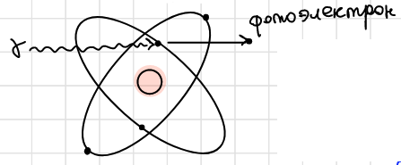
Эффект Комптона — рассеяние кванта на свободном электроне; фотон передаёт часть
своей энергии и импульса электрону
$E_\gamma \in [0.5, 1]$ МэВ
В поле ядра или электрона фотон может образовать пару электрон‐позитрон.
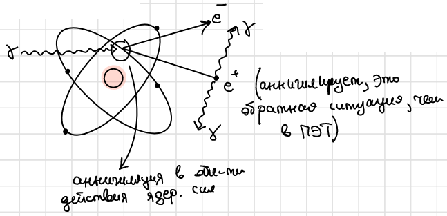
В медицине обычно $E_\gamma \lt 1$ МэВ, поэтому ослабление пучка фотонов происходит
в основном из-за фотоэффекта и эффекта Комптона.
Доза излучения и ее единицы
поглощённая доза излучения ($D$), единица
измерения — грей (Гр);
экспозиционная доза ($X$), единица измерения
— кулон на килограмм (Кл/кг), внесистемная единица измерения —
рентген;
эквивалентная доза ($H$), единица измерения
— зиверт (Зв);
мощность дозы излучения (Гр/с, А/кг).
Зависимость:
\[
D = f X, \qquad f = 0.873 \frac{\mu_\text{ткани}}{\mu_\text{воздуха}},
\qquad f = 33.8 \frac{\mu_\text{ткани}}{\mu_\text{воздуха}}.
\]
Первая $f$ — для рентгена, вторая — для Кл/кг.
Мощность поглощённой дозы получается как производная:
\[
D = \dv{D(t)}{t},
\]
единица мощности — Гр/с.
Эквивалентная доза $h$:
\[
h = D k,
\]
где $k$ — коэффициент качества излучения.
Вид излучения
Коэффициент качества ($k$)
1.
рентгеновское и $\gamma$-кванты
1
2.
$\beta$-частицы и электроны
1
3.
$\alpha$-частицы и фотоны
10
4.
тепловые нейтроны
2-5
5.
быстрые нейтроны
5-10
Приборы для радионуклидной диагностики. Общая характеристика приборов

Установка для регистрации излучений всегда содержат 3 основных узла:
один или несколько детекторов;
устройство преобразования и отбора сигналов;
одно или несколько регистрирующих устройств.
Детекторы излучения. Сцинтилляционные детекторы для ОФЭКТ
Типы детекторов:
ионизационные камеры;
газоразрядные счётчики;
сцинтилляционные детекторы — наиболее распространены (сцинти — вспышка);
полупроводниковые детекторы.
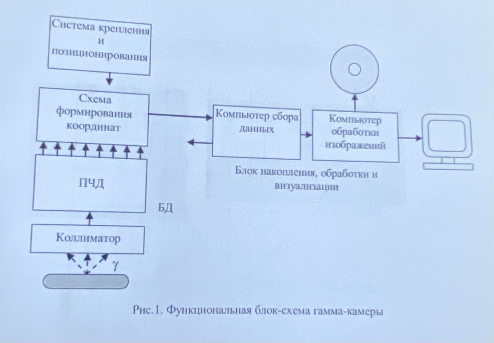
ПЧД — позиционно-чувствительный детектор
Самыми общими параметрами, характеризующими ПЧД, являются:
эффективность регистрации гамма-излучения. Показатель
эффективности регистрации определяет скорость накопления
информации при заданной активности источника. Высокое значение
позволяет понизить дозовую нагрузку на пациента и уменьшить время
обследования.
площадь чувствительной поверхности;
собственное пространственное разрешение — определяет
минимальный размер объекта, различимого на изображении.
Заметный вклад в суммарное разрешение вносит коллиматор.
Большинство гамма-камер и все гамма-томографы имеют сцинтилляционные ПЧД.
Компоновка ПЧД обычно повторяет классическую схему Энжера: кристалл йодистого натрия,
активированного таллием ($\mathrm{NaI}(\mathrm{Tl})$), соединённый с набором
фотоэлектронных умножителей (ФЭУ).
Блок детектирования для ОФЭКТ
Основными компонентами блоков детектирования являются:
многоканальный коллиматор;
сцинтилляционный кристалл $\mathrm{NaI}(\mathrm{Tl})$,
соединённый с набором фотоэлектронных умножителей (ФЭУ);
электронное устройство, обеспечивающее определение
координат и амплитуд сигналов.
Коллиматор
Коллиматор служит для селекции по направлению гамма-квантов,
падающих на камеру.
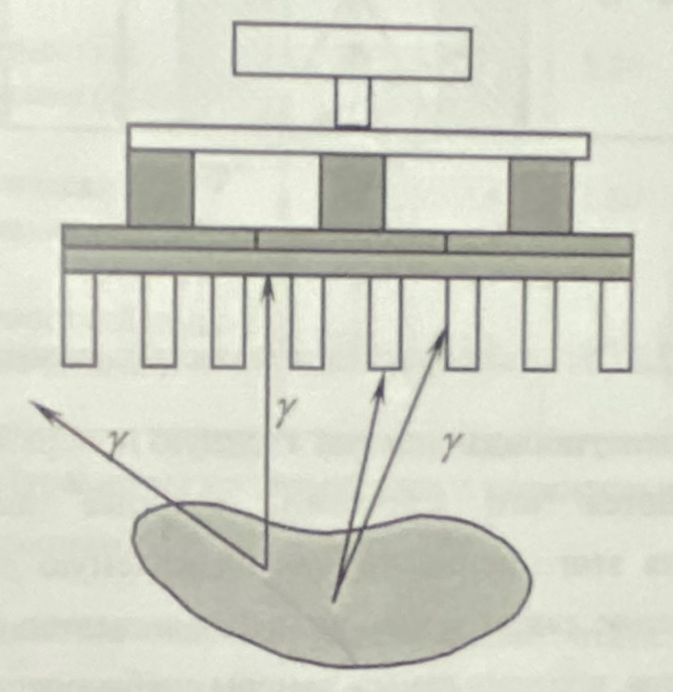
Угловая чувствительность коллиматора
определяется отношением диаметра канала $w$ к его длине $L$, т.к.
он пропускает все кванты, направления которых составляют с осями каналов
угол меньше половины апертурного $\nu_\text{ап}$.
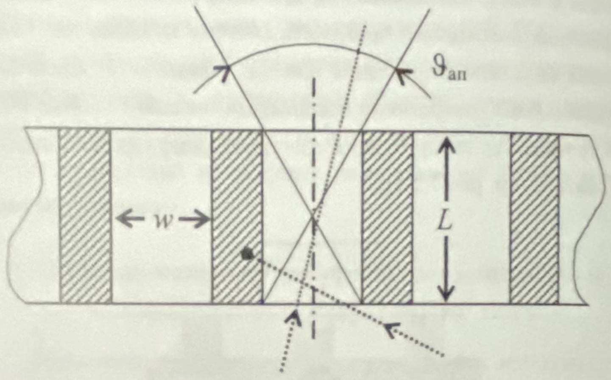
Пространственное разрешение коллиматора:
\[
R_c = \frac{d(L + z)}{L},
\]
где
$d$ — диаметр отверстия коллиматора;
$L$ — длина трубки коллиматора;
$z$ — расстояние от объекта до детектора.
Чем меньше $R_c$, тем лучше разрешение.
Геометрическая эффективность (чувствительность) коллиматора:
\[
g \approx K \paren{\frac{d^2}{L(d + t)}}^2,
\]
где
$t$ — толщина свинцовой септы между отверстиями;
$K$ — постоянная, зависящяя от формы отверстия.
Если $z \gg L$, а $d \gg t$, то из формул можно получить приближённое
соотношение между $g$ и $R_c$:
\[
g \approx R_c^2.
\]
Видим, что пространственное разрешение коллиматора можно повысить только
за счёт уменьшения геометрической эффективности (при постоянной толщине септы).
Схема формирования координатных сигналов
Функционально, схема обеспечивает:
формирование и усиление сигналов с выхода каждого ФЭУ;
преобразование их в цифровую форму (АЦП);
предобработку сигналов, включающую коррекцию искажений
и обработку наложений событий в реальном времени;
вычисление координат сцинтилляций;
буферизацию данных и их передачу;
контроль и управление параметрами настройки
детектора с компьютера сбора данных.
Гамма‐камера/гамма‐томограф
ОФЭКТ и $\gamma$-томограф — одно и то же.
Компоненты современного $\gamma$-томографа:
один или несколько блоков детектирования,
предназначенных для регистрации $\gamma$-излучения;
штативно-поворотное устройство, обеспечивающее крепление блока детектирования
(например, гантри);
ложе пациента;
монитор укладки;
биосинхронизатор (например, кардиосинхронизатор);
электронная система позиционирования;
компьютер сбора данных
— центральный многофункциональный узел, обеспечивающий:
коррекцию данных, сформированных блоками детектирования, включая
нормализацию;
энергетическую коррекцию;
коррекцию по нелинейности и неоднородности;
сохранение собранных и скорректированных данных в виде списка и/или
в виде кадровой последовательности изображений;
управление системой гантри и ложем пациента в режиме томографического сканирования,
считывание и сохранение текущих координат блоков детектирования и ложа пациента;
контроль и управление параметрами работы блоков детектирования.
компьютер обработки изображений. Задачи блока:
окончательная обработка данных, собранных при радиодиагностическом исследовании;
вычисление параметрических показателей исследуемых органов и систем человека;
визуализация и архивация полученных данных и результатов.
Алгоритмы вычисления координат сцинтилляционных событий для гамма-камер и гамма томографов
Алгоритмы можно разбить на 3 группы:
метод Энжера;
метод максимального правдоподобия;
геометрические методы.
Метод Энжера
Используются все ФЭУ, вычисления проводятся по методу взвешенного среднего.
\[
X = \frac{\sum\limits_{i=1}^{N} X_{ci} \cdot A_i}{\sum\limits_{i=1}^{N} A_i},
\qquad
Y = \frac{\sum\limits_{i=1}^{N} Y_{ci} \cdot A_i}{\sum\limits_{i=1}^{N} A_i},
\]
где
$X,Y$ — оценка координат события;
$A_i$ — амплитуда сигнала $i$-го ФЭУ;
$X_{ci}, Y_{ci}$ — координаты центра фотокатода $i$-го ФЭУ.
Отклик сцинтилляционной вспышки $A_i$ зависит от $X,Y$ (координат события).
Логарифмическая функция правдоподобия:
\[
\begin{aligned}
LL(x,y,A_i,\sigma_i) &= \ln L(x,y,A_i,\sigma_i) = \\
&= \sum\limits_{i=1}^{N} \paren{
\ln \left[ 2 \pi \sigma_i^2(x,y) \right]^{-1/2}
-
\frac{(A_i - \overline{A_i(x,y)})^2}{2 \sigma_i^2(x,y)}
}.
\end{aligned}
\]
Дифференцируя это выражение по $x,y$, получим систему уравнений, решение
которой относительно $x,y$ и даёт оценку координат:
\[
\pd{LL}{x} = 0, \qquad \pd{LL}{y} = 0.
\]
Геометрические методы
Зависимость амплитуды сигнала фотоприёмника от расстояния между
центром фотоприёмника и точкой сцинтилляции называется
амплитудно-пространственной характеристикой (АПХ)
Надо заранее знать АПХ ФЭУ. Полученное этими методами решение может
использоваться как начальное приближение для других численных
итерационных методов.
Основные характеристики гамма-камер и гамма томографов
Подразделяются на:
собственные — измеряющиеся без коллиматора;
системные — с учётом характеристик коллиматора.
Основные характеристики.
Собственная чувствительность (без
коллиматора) $\gamma$-камеры — отношение наблюдаемой
скорости счёта (числа регистрируемых $\gamma$-квантов в единицу
времени) к активности плоского источника, расположенного
параллельно чувствительной поверхности детектора.
Значение зависит от ширины энергетического окна, расстояния
между источником и детектором и используемого радионуклида.
Собственное пространственное разрешение
— определяется как наименьшее расстояние между двумя
точечными источниками, при котором они воспринимаются раздельно.
Энергетическое разрешение —
отношение ширины пика полного поглощения на половине максимальной
высоты к его положению на энергетическом спектре, выраженное в
процентах. Является собственной характеристикой.
Неоднородность и нелинейность изображения
— специфические искажения и неоднородности сцинтилляционных
$\gamma$-камер.
Показатель собственной интегральной неоднородности:
\[
v_{\max} = \frac{n_{\max} - n_{\min}}{n_{\max} + n_{\min}} \cdot 100\%,
\]
где $n_{\max}, n_{\min}$ — максимальное и минимальное значения
скорости счёта по полю детектора.
Быстродействие $\gamma$-камеры —
определяет минимальное в каждой конкретной ситуации время для
получения статистически значимого изображения.
Разрешающее («мёртвое») время
— наименьшее значение временного интервала между двумя
последовательными взаимодействиями гамма-квантов с чувствительным
объёмом детектора, которе необходимо для их раздельного восприятия
и обработки.
Характеристика скорости счёта —
зависимость наблюдаемой скорости счёта $c_\text{н}$ от истинной.
Режимы сбора данных радионуклидного исследования, проводимого на гамма-томографе
В результате сбора данных и первичной обработки получаем некоторую функцию $\rho(x,y)$,
где $(x,y)$ — координаты сцинтилляционных событий. Значение функции
— число зарегистрированных сцинтилляционных событий.
Эта функция отражает распределение РФП в исследуемом объекте. Её
называют плотностью распределения РФП (индикатора).
В зависимости от целей исследования применяют один из режимов работы:
Планарное статическое сканирование —
в процессе сбора информации перемещения пациента и блоков детектирования (БД)
не происходит. Для каждого детектора формируется одно изображение.
В итоге получаем плотность распределения индикатора $\rho = \rho(x,y)$, где $(x,y) \in D \subset \mathbb{R}^2$,
или, с учётом дискретизации в зависимости от типа коллиматора, матрицу ${\left\{ P(i, j) \right\}}_{i,j=1}^n$.
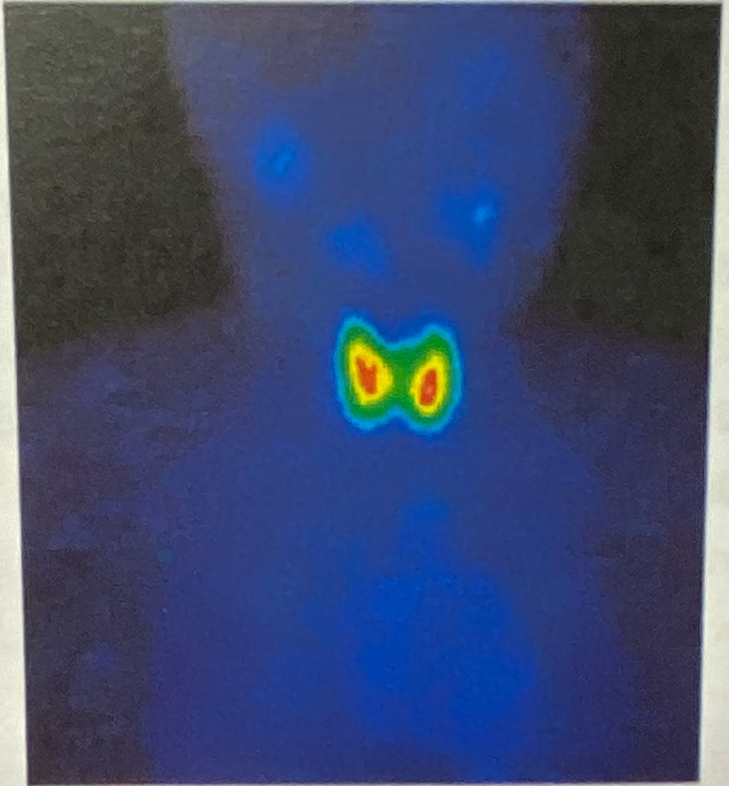
Планарное динамическое сканирование. Режим аналогичен предыдущему,
но для каждого детектора формируется последовательность изображений с фиксированной выдержкой.
Плотность распределения РФП — $\rho = \rho(t, x, y)$, где $t \in [0, T], (x,y) \in D$,
или, с учётом дискретизации в зависимости от типа коллиматора,
последовательность матриц $P_1(i,j), \dots, P_N(i,j)$, где $i,j = \overline{1,n}$.
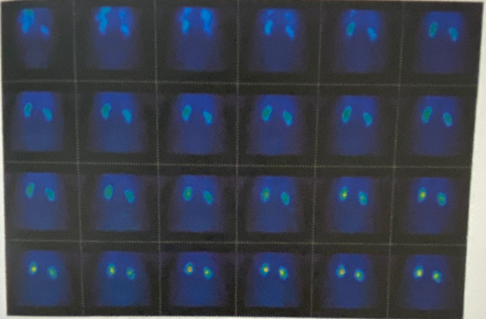
Сканирование в режиме «всё тело». В процессе сбора информации
происходит перемещение пациента в горизонтальном направлении. В начальном положении блоки
находятся друг против друга (один сверху, другой снизу). В процессе сканирования угловое положение
блоков не изменяется. В итоге формируется одно изображение.
Плотность распределения индикатора: $\rho_1 = \rho_1(x,y)$ и
$\rho_2 = \rho_2(x,y)$, где $(x,y) \in D$,
или, с учётом дискретизации в зависимости от типа коллиматора,
две матрицы ${\left\{ P_1(i, j) \right\}}_{i,j=1}^n$ и
${\left\{ P_2(i, j) \right\}}_{i,j=1}^n$.
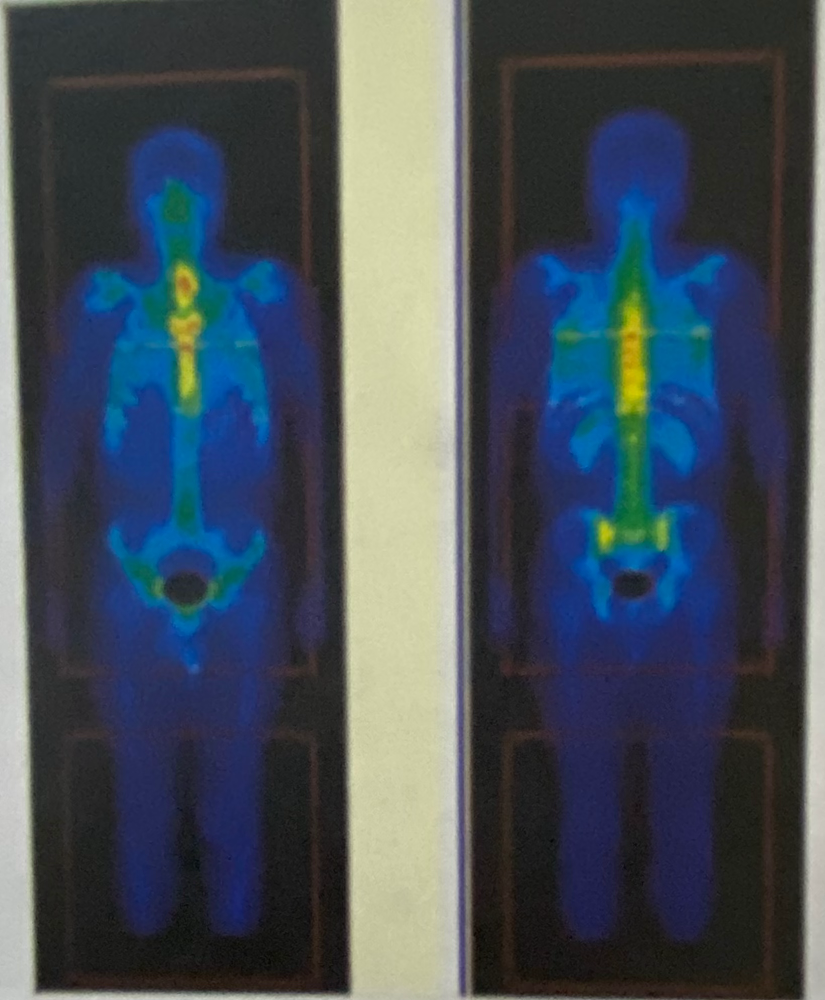
Томографическое сканирование — получаем
картины объёмного распределения РФП с помощью томографической реконструкции.
Для этого формируется последовательность изображений, соответствующих
различным угловым ракурсам. Перемещение пациента не происходит.
Изначально рассматривается последовательность функций $\rho_k = \rho_k(x, y)$, где $k = 1, \dots, N$,
или матриц $P_1(i,j), \dots, P_N(i,j)$, где $i,j = 1, \dots, n$. После томографической реконструкции
получаем объёмное распределение $\rho = \rho(x,y,z)$ или трёхмерную матрицу $P(i,j,k)$, где $i,j,k = 1,\dots,n$.
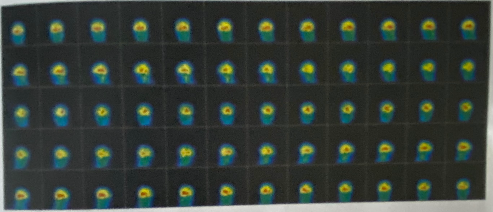
«Синхронизация». Режим аналогичен планарному статическому
сканированию за одним исключением: сбор информации ведётся с использованием сигнала
внешнего устройства (кардиосинхронизатора).
Исследования с кардиосинхронизацией позволяют получать изображения сердца в различные фазы
сердечного цикла.
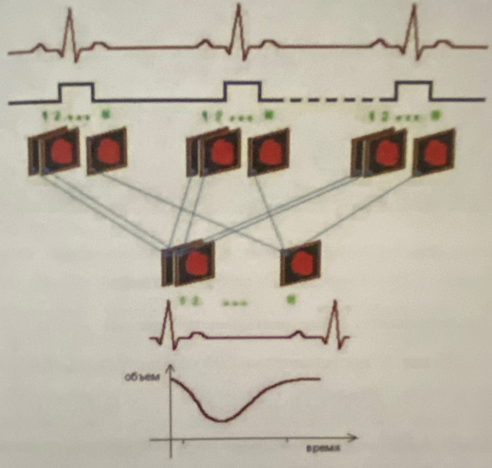
Представительный сердечный цикл формируется так: регистрация гамма-излучения РФП сочетается с синхронизацией
записи с $R$ зубцом сердечного цикла. $R-R$ интервал, фиксируемый электрокардиографом, разделяется
на заданное количество равных временных фрагментов, в каждом из которых происходит регистрация
излучения от области миокарда. В конце происходит суммирование полученного изображения
по аналогичным фрагментам для всех записанных $R-R$ интервалов.
В итоге имеем функцию $\rho = \rho(t,x,y)$ или последовательность матриц $P_1(i,j), \dots, P_N(i,j)$.
Томография с синхронизацией. Режим является комбинацией томографического сканирования
и режима синхронизации: перемещения блоков происходят в томографическом режиме, но в каждой позиции
формируется серия изображений.
Изначально получаем последовательность функций $\rho_k = \rho_k(t,x,y)$ или матриц
\[
\begin{aligned}
P_1^1(i,j), &\dots, P_N^1(i,j), \\
P_1^2(i,j), &\dots, P_N^2(i,j), \\
&\vdots \\
P_1^N(i,j), &\dots, P_N^N(i,j).
\end{aligned}
\]
После томографической реконструкции имеем пространственно-временное распределение $\rho = \rho(t,x,y,z)$
ИЛИ $\rho_k(x,y,z)$ — с учётом дискретизации по времени плотности распределения РФП, соответствующие
$N$ интервалам представительного сердечного цикла,
ИЛИ последовательность трёхмерных матриц $P_1(i,j,k), \dots, P_N(i,j,k)$.
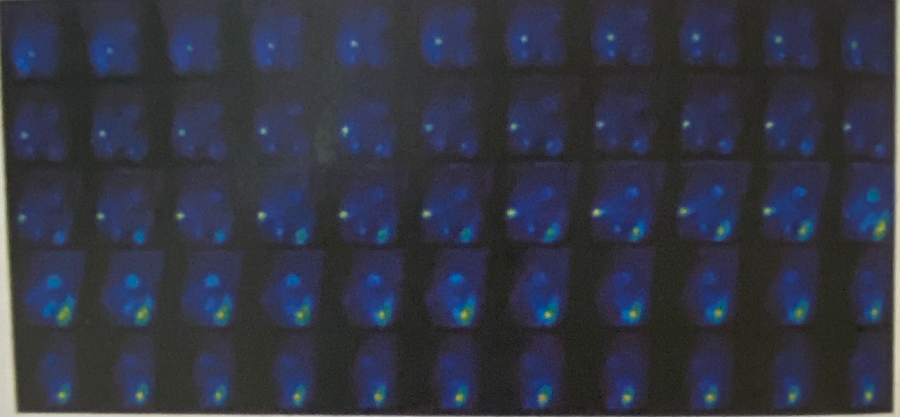
ПЭТ (Позитронный эмиссионный томограф), история развития метода
Методика ПЭТ отображения является комбинацией двух изобретений,
представленных к Нобелевской премии - радиоактивного индикатора и
принципов томографии. История ПЭТ началась в 1950-ых, когда
появилась возможность регистрации позитрона. Первый прототип ПЭТ
сканера появился в 1952 году в Массачусетском госпитале после 6
месяцев разработки конструкции. Он имел всего лишь два детектора на
основе йодистого натрия, расположенных друг напротив друга.
На развитие технологии ПЭТ повлияли три фактора:
большинство метаболических процессов в теле происходят
достаточно быстро, чтобы следить за ними с помощью короткоживущих
радионуклидов;
несмотря на короткое время жизни изотопов, стала
возможна быстрая радиоактивная маркировка сложных молекул;
посредством проникающих фотонов с достаточной точностью можно
локализовать место аннигиляции.
В 2001 г. был начат серийный выпуск первого совмещенного ПЭТ/КТ сканера,
предназначенного для получения так называемого совмещенного —
анатомо-функционального изображения.
ПЭТ (Позитронный эмиссионный томограф)
ПЭТ используется для проведения диагностической процедуры визуализации
пространственно-временного распределения позитронно-излучающего
радиофармпрепарата в теле пациента по аннигиляционному излучению.
Применяются позитронно-излучающие ультракороткоживущие радионуклиды.
Регистрация аннигиляционных гамма-квантов осуществляется с помощью колец детекторов,
окружающих пацента.
Если два детектора одновременно (в пределах интервала совпадений) зарегистрировали
сигналы, то это означает, что аннигиляционные кванты образовались в одном акте, и
точка аннигиляции находится на линии, соединяющей детекторы. Система суммирует все линии
ответа, зарегистрированные за время экспозиции, и производит реконструкцию данных.
В итоге получаем трёхмерное распределение РФП.
Важная характеристика изотопов для ПЭТ — энергия излучаемых позитронов.
В процессе замедления позитрон заметно смещается от точки рождения, поэтому образование
аннигиляционных гамма-квантов происходит в пределах некоторой сферы. Радиус этой сферы
определяет теоретический предел разрешающей способности метода.
$\mathrm{F}^{18}$
$\mathrm{C}^{11}$
$\mathrm{N}^{13}$
$\mathrm{O}^{15}$
$\mathrm{Ga}^{67}$
$\mathrm{Rb}^{82}$
Максимальная энергия $e^+$, МэВ
0.63
0.96
1.2
1.74
1.9
3.15
Диаметр сферы, в которой аннигилируют 75% позитронов, мм
1.2
2.1
2.9
4.9
5.4
12.4
Максимальный пробег, мм
2.4
5.0
5.4
8.2
9.1
15.6
Основные факторы, влияющие на качество изображения ПЭТ
Основные факторы:
ослабление излучения в результате фотоэффекта и комптоновского
рассеяния.
Рассеяние сопровождается уменьшением энергии кванта, поэтому для уменьшения
количества ложных линий, обусловленных рассеянием, необходимо осуществлять
энергетический анализ зарегистрированных квантов.
случайные совпадения, возникающие от разных аннигиляций.
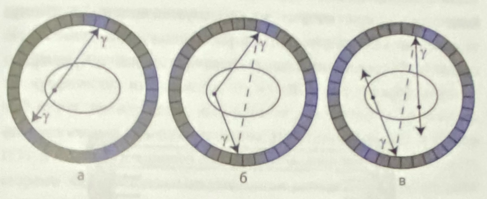
Истинное (а), рассеянное (б) и случайное (в) совпадения
Обработка сигнала требует определённого времени. «Мёртвое время» —
интервал, в течение которого детектирующий модуль и электроника томографа заняты
обработкой сигналов от одной пары гамма-квантов. В течение этого времени система
не способна регистрировать новые события.
Степень потерь событий, связанная с «мёртвым временем», зависит от
быстродействия аппарата и величины радиоактивности в поле зрения ПЭТ-томографа.
Для уменьшения количества рассеянных и случайных совпадений
кольца детекторов могут быть разделены септой коллиматора (из
вольфрама или свинца). Регистрация излучения с использованием
септы называется 2D-режимом, без
использования септы — 3D-режимом.
2D-режим — низкий шум, низкая чувствительность сканера (отношение числа
регистрируемых в поле зрения томографа событий аннигиляции к их истинному количеству).
3D-режим — высокий шум, высокая чувствительность.
Сцинтилляционные детекторы для ПЭТ, характеристики сцинтилляторов
Детекторы можно разделить на 2 группы:
детекторы типа «однородный кристалл — ФЭУ»;
фосвич‐детекторы (с использованием многослойных кристаллов).
В большинстве коммерческих томографов — детекторы типа
«однородный кристалл — ФЭУ».
Часто используют кристалл BGO
($\mathrm{Bi}_4\mathrm{Ge}_3\mathrm{O}_{12}$):
высокая плотность;
небольшая длина поглощения квантов 511 кэВ;
низкая стоимость (по сравнению с LGO).
Длины кристала BGO 30 мм достаточно для достижения необходимой
эффективности регистрации. Аннигиляционные кванты взаимодействуют с
веществом сцинтиллятора, а вспышка света непосредственно или по
световоду поступает на чувствительную поверхность ФЭУ.
Сцинтилляционный кристалл разрезан на отдельные пиксели, щели между
которыми заполнены светоотражателем. Неразрезанная часть кристалла
служит световодом.
Сцинтилляционная вспышка регистрируется всеми ФЭУ, по их суммарному
сигналу формируется сигнал временной привязки и энергетический
сигнал, а по соотношению сигналов идентифицируется пиксель, в
котором поглотился квант.
Пространственное разрешение зависит от размеров пикселя.
При уменьшении зерна сегментации проявляется эффект, называемый
радиальным отклонением. Квант, падающий не перпендикулярно, может
пройти сквозь пиксель и поглотиться не этим пикселем, а соседним.
Из-за этого появляются ошибки в определении места взаимодействия
кванта с сцинтиллятором.
Мёртвое время модуля обусловлено временем высвечивания кристалла BGO
и составляет примерно микросекунду.
Метод рентгеновской томографии заметно превосходит радиоизотопные методы при проведении
структурных обследований органов.
Отличительная черта радионуклидной диагностики — возможность проведения функциональных
изображений (помимо анатомо-топографических).
Также есть комплексы ПЭТ/МРТ — меньше получаемая доза излучения, чем в ПЭТ/КТ.
Математическая обработка информации. Виды обработки
Улучшение качества изображения (сглаживания, фильтрация).
Реконструкция (фильтрация обратных проекций).
Коррекция движения.
Классификация математических моделей транспорта индикатора
Модели:
детерминированные:
камерные:
линейные;
нелинейные (ДУ или разностные ДУ);
циркуляционные:
интегральные уравнения Стеффонсона;
принцип Стюарта-Гамильтона;
с распределёнными параметрами (уравнения диффузии);
стохастические:
камерные;
случайное блуждание (цепи Маркова).
Камерные линейные модели транспорта индикатора
Система организма делится на $m$ виртуальных камер:
плазменное пространство;
внеплазменное пространство (при введении в вену может происходить
диффузия в межклеточное пространство);
остальное: почки, мочевой пузырь, аорта между почками и так далее.
Допущения для линейных камерных моделей:
транспорт — биохимические реакции 1-го порядка (иначе — нелинейные модели);
перемещение индикатора происходит мгновенно (иначе — разностные модели).
Пусть $q_i(t)$ — количество индикатора в $i$-ой физиологической
камере. Тогда
\[
\left\{
\begin{aligned}
\dot q_i(t) &= \sum\limits_{j=1}^{m} a_{ij} q_j(t), \\
q_i(0) &= q_i^0, & i &= \overline{1,n},
\end{aligned}
\right.
\]
где $a_{ij}$ — транспортные константы, характеризующие
скорость переноса индикатора из $j$-ой камеры в $i$-ую.
В матричном виде эта система имеет вид
\[
\left\{
\begin{aligned}
\dot q(t) &= A q(t), \\
q(0) &= q^0.
\end{aligned}
\right.
\]
Математическая модель кинетики РФП при исследовании функции почек
Исследование проводят для проверки функции почек.
Основные допущения:
изменение количества РФП в плазме происходит за счёт его
поглощения почками и обменом с внеплазменным пространством
(процессы протекают, вообще говоря, с разной скоростью);
изменение РФП во внеплазменном пространстве пропорционально
его концентрации в плазме и внеплазменном пространстве;
количество РФП, захватываемого почками из плазмы, пропорционально
его концентрации в плазме;
на протяжении всего исследования объёмы камер остаются постоянными,
а компоненты транспортной матрицы не зависят от времени.
Трёхкамерная модель
Рассмотрим камеры:
внеплазменная область;
плазма;
почки и мочевой пузырь.
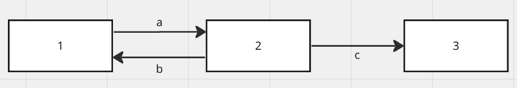
Тогда камерная модель примет вид:
\[
\left\{
\begin{aligned}
\dot q_1(t) &= - a q_1(t) + b q_2(t), \\
\dot q_2(t) &= a q_1(t) - (b + c) q_2(t), \\
\dot q_3(t) &= c q_2(t).
\end{aligned}
\right.
\]
Начальные условия:
\[
\left\{
\begin{aligned}
q_1(0) &= 0, \\
q_2(0) &= Q, \\
q_3(0) &= 0,
\end{aligned}
\right.
\]
где $Q$ — количество РФП, введённого в организм.
Решение этой камерной модели имеет вид
\[
q(t) = C_1 e^{\lambda_1 t} + C_2 e^{\lambda_2 t} + C_3 e^{\lambda_3 t},
\]
где $C_i$ — собственные векторы, соответствующие корням
характеристического полинома $\lambda_i$.
Четырёхкамерная модель специального вида
Модель представляет интерес в случае мочевого рефлюкса (возвращение
мочи в почки из мочевого пузыря).
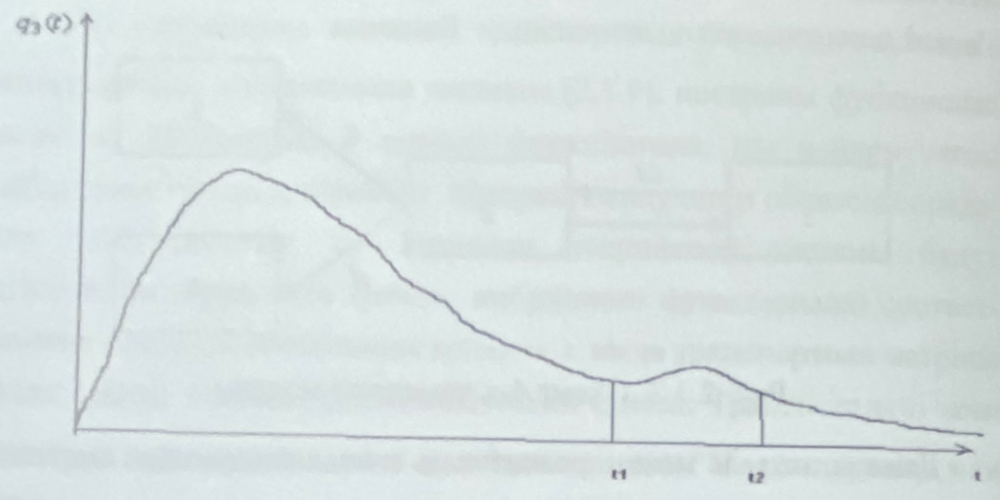
График экспериментальной кривой изменения количества РФП в почках
Видно, что на некотором промежутке $[t_1, t_2]$ количество РФП
значительно возрастает, следовательно, имеет место рефлюкс.
Камеры:
внеплазменная область;
плазма;
почки;
мочевой пузырь.
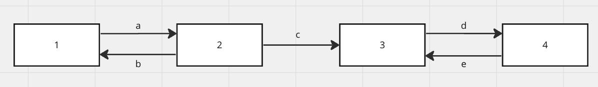
Отличие от других камерных моделей заключается в том,
что функция $e(t)$ является некоторой кусочно-постоянной функцией.
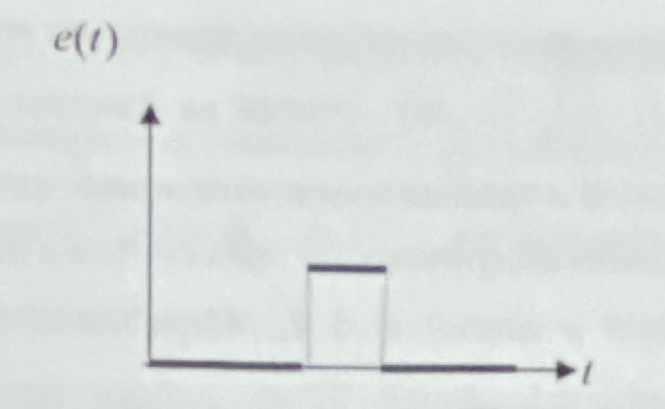
Камерная модель:
\[
\left\{
\begin{aligned}
\dot q_1(t) &= - a q_1(t) + b q_2(t), \\
\dot q_2(t) &= a q_1(t) - (c + b) q_2(t), \\
\dot q_3(t) &= c q_2(t) - d q_3(t) + e(t) q_4(t), \\
\dot q_4(t) &= c q_2(t) - e(t) q_4(t).
\end{aligned}
\right.
\]
Недостатком этой модели служит тот факт, что дополнительно
надо определять промежуток $[t_1, t_2]$.
Пятикамерная модель
Камеры:
внеплазменная область;
плазма;
правая почка;
левая почка;
мочевой пузырь.
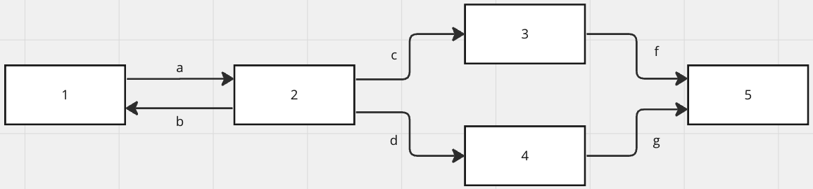
Камерная модель:
\[
\left\{
\begin{aligned}
\dot q_1(t) &= - a q_1(t) + b q_2(t), \\
\dot q_2(t) &= a q_1(t) - (b + c + d) q_2(t), \\
\dot q_3(t) &= c q_2(t) - f q_3(t), \\
\dot q_4(t) &= d q_2(t) - g q_4(t), \\
\dot q_5(t) &= f q_3(t) + g q_4(t).
\end{aligned}
\right.
\]
Начальные условия: $q_1(0) = q_3(0) = q_4(0) = q_5(0) = 0, \; q_2(0) = Q$.
построение экспериментальных кривых, описывающих
динамику перераспределения индикатора в исследуемых областях;
аппроксимация экспериментальных данных соответствующими модельными
функциями (суммами экспонент);
нахождение первого приближения транспортной матрицы;
построение функционала качества;
минимизация функционала качества для определения оптимизированных
параметров системы.
Для трёхкамерной модели можно рассмотреть следующий функционал качества:
\[
I(a,b,c,d) = \int\limits_{}^{} \sum\limits_{i=2}^{3} k_i {\left(
q_i(a,b,c,d,t) - \bar{\hat{q}}_i(t)
\right)}^2 dt,
\]
где $\bar{\hat{q}}_i(t)$ — экспериментальные данные.
Построение функциональных изображений при планарных исследованиях с синхронизацией. Равновесная
вентрикулография сердца
Функциональным (параметрическим) преобразованием называют
некоторое преобразование $G$ функции $\rho(t, x)$ в функцию $\tilde\rho(x)$:
\[
\rho(t,x) \overset{G}{\longrightarrow} \tilde\rho(x).
\]
Под параметрическим преобразованием также будем понимать некоторое преобразование
$G$ последовательности функций $\{\rho_k(x) = \rho(t_k, x)\}_{k=1}^N$ в $\tilde\rho(x)$
\[
\{\rho_k(x)\}_{k=1}^N \overset{G}{\longrightarrow} \tilde\rho(x)
\]
или последовательности матриц $\{P_m(i,j,k) = \rho(t_m, x_i, y_j, z_k)\}_{m=1}^N$
в матрицу $\tilde P(i,j,k)$:
\[
\{P_m(i,j,k)\}_{k=1}^N \overset{G}{\longrightarrow} \tilde P(i,j,k).
\]
Примеры параметрических преобразований:
$\tilde \rho(x) = \rho(\bar t, x) - \rho(\bar {\bar t}, x)$,
где $\bar t$ и $\bar{\bar t}$ — некоторые фиксированные значения;
$\tilde \rho(x) = T_{\max}(x)$, где $T_{\max}$ определяется следующим образом:
\[
\rho(T_{\max}, x) = \max_{t \in [0, T]} \rho(t, x);
\]
$\tilde \rho(x) = T_{1/2}(x) - T_{\max}(x)$, где $T_{1/2}(x)$ определяется следующим образом:
\[
\rho(T_{1/2}, x) = \frac{1}{2} \rho(T_{\max}, x).
\]
Для $x$, для которых такого $T_{1/2}(x)$ не существует, мы полагаем $\tilde \rho(x) = T$;
будем считать, что функция $\rho(t,x)$ периодическая по $t$ с периодом $2l$. Ряд
Фурье для этой функции может быть записан в виде
\[
\rho(t,x) = \frac{a_0(x)}{2} + \sum\limits_{i=1}^{\infty} \left(
a_k(x) \cos \frac{k \pi}{l} t + b_k(x) \sin \frac{k \pi}{l} t
\right),
\]
где
\[
\begin{aligned}
a_0(x) &= \frac{1}{l} \int\limits_{0}^{2l} \rho(t,x) dt, \\
a_k(x) &= \frac{1}{l} \int\limits_{0}^{2l} \rho(t,x) \cos \frac{\pi k t}{l} dt, \\
b_k(x) &= \frac{1}{l} \int\limits_{0}^{2l} \rho(t,x) \sin \frac{\pi k t}{l} dt.
\end{aligned}
\]
Он может быть записан также в виде
\[
\rho(t,x) = \frac{a_0(x)}{2} + \sum\limits_{i=1}^{\infty} A_k(x) \cos \left(
\frac{k \pi}{l} t - \varphi_k(x)
\right),
\]
где
\[
\begin{aligned}
A_k(x) &= \sqrt{a_k^2(x) + b_k^2(x)}, \\
\varphi_k(x) &= \argtg \left( \frac{b_k(x)}{a_k(x)} \right).
\end{aligned}
\]
Введём обозначения для гармоник:
\[
\rho^k(t, x) = A_k(x) \cos \left( \frac{k \pi}{l} t - \varphi_k(x) \right).
\]
Тогда можно записать следующие преобразования:
\[
\begin{aligned}
\tilde \rho(x) &= A_1(x), \\
\tilde \rho(x) &= \frac{180}{\pi} \varphi_1(x).
\end{aligned}
\]
Первое называют амплитудным, второе — фазовым.
Равновесная вентрикулография сердца
Планарное динамическое исследование (с синхронизацией).
В данном исследовании предполагается, что изменение накопления РФП в
некоторой области отражает изменение кровенаполнения в данной
области.
Построения, которые применяются при обработке данных:
Парадоксальное изображение
\[
\text{Пар}(i,j) = P_\text{КС}(i,j) - P_\text{КД}(i,j),
\]
где
$P_\text{КС}(i,j)$ — цифровое значение в ячейке $(i,j)$
конечно-систолической матрицы после фоновой коррекции;
$P_\text{КД}(i,j)$ — цифровое значение в ячейке $(i,j)$
конечно-диастолической матрицы после фоновой коррекции.
Отрицательные значения обнуляются.
Данное изображение позволяет выявлять зоны парадоксальной
пульсации в области сердца.
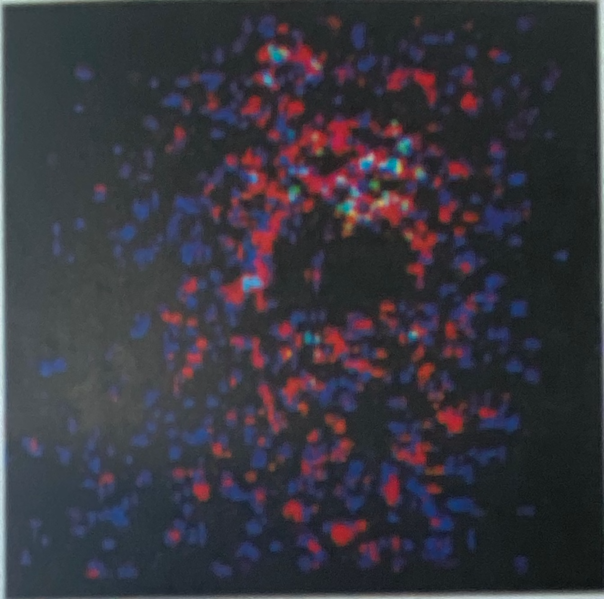
Изображение ударного объёма
\[
\text{УО}(i,j) = P_\text{КД}(i,j) - P_\text{КС}(i,j).
\]
Фракция выброса является критерием оценки сократительной функции левого желудочка.
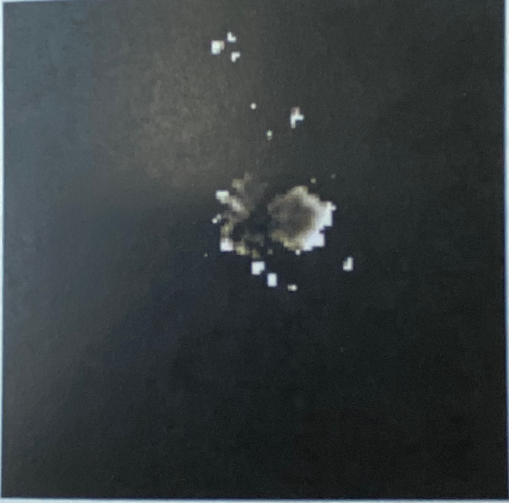
Амплитудное изображение
Пусть
\[
\rho_{ij}(t_k) = P_k(i,j), \qquad t_k = \frac{2l (k-1)}{N}, \qquad k = \overline{1,N}.
\]
Полагаем, что $\rho_{ij}(t)$ периодическая с периодом $2l$. Она характеризует изменение
плотности РФП в $(i,j)$-ой ячейке в течение представительного сердечного цикла.
\[
\bar \rho_{ij}(t)
= \frac{a_0}{2}
+ a_1 \cos \frac{\pi}{l} t
+ b_1 \sin \frac{\pi}{l} t
+ a_2 \cos \frac{2\pi}{l} t
+ b_2 \sin \frac{2\pi}{l} t.
\]
Сделаем замену $t = \dfrac{2l}{N} \bar t$, тогда
\[
\tilde \rho_{ij}(\bar t)
= \frac{a_0}{2}
+ a_1 \cos \omega \bar t
+ b_1 \sin \omega \bar t
+ a_2 \cos 2 \omega \bar t
+ b_2 \sin 2 \omega \bar t,
\]
где $\omega = \dfrac{2\pi}{N}$.
Вычислим производную этой функции:
\[
\dv{\tilde \rho_{ij}(\bar t)}{\bar t}
=
- a_1 \omega \sin \omega \bar t
+ b_1 \omega \cos \omega \bar t
- 2 a_2 \omega \sin 2 \omega \bar t
+ 2 b_2 \omega \cos 2 \omega \bar t.
\]
Тогда
\[
\text{МСИ} = \max_{\bar t \in \{1,\dots,N\}}
- \dv{\tilde \rho_{ij}(\bar t)}{\bar t}.
\]
Максимальная скорость наполнения
\[
\text{МСН} = \max_{\bar t \in \{1,\dots,N\}}
\dv{\tilde \rho_{ij}(\bar t)}{\bar t}.
\]
Время максимального изгнания
\[
\text{ВМИ}(i,j) = \bar t,
\]
где $\bar t$ — номер кадра, для которого значение производной из МСИ максимально.
Время максимального наполнения
\[
\text{ВМН}(i,j) = \bar t,
\]
где $\bar t$ — номер кадра, для которого значение производной из МСН максимально.
Построение функциональных изображений для томографических исследований перфузии миокарда.
Изображения перфузии. Фазовое изображение
Построение функциональных изображений для томографических исследований перфузии миокарда.
Изображение движения стенок. Изображение систолического утолщения
Комплекс клинических диагностических программ для радионуклидной диагностики. Общая структура и
назначение основных компонент
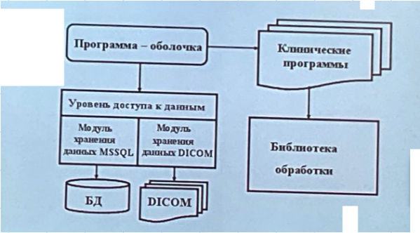
Клинические программы —
программы для обработки медицинских исследований. Являются главной
частью комплекса. Реализуют обработку и визуализацию данных
конкретного исследования с целью получения качественной и
количественной диагностической информации.
Библиотека обработки —
содержит алгоритмы и вспомогательные функции.
Программа-оболочка —
отвечает за:
навигацию по исследованиям;
запуск диагностических программ, совместимых с выбранным типом
исследования;
предварительную визуализацию данных исследования.
Цель блока — выступать связующим звеном между клиническими программами
и источниками данных в терминах объектной модели и сохранять внесённые изменения
в хранилище данных (включая отчёты).
Требования к комплексу:
обработка проводится по общим подходам: мат. аппарат — с минимальными искажениями,
вычисляем наиболее значимые параметры;
должен содержать как общие программы (модули коррекции движения,
томографическая реконструкция, визуализация), так и специализированные
модули для обработки данных исследований в различных областях (мозг, почки, печень, сердце, ...);
Чем больше капилляров подвергается эмболизации, тем больше будет в
лёгких накопления РФП. Отсутствие накопления РФП — нарушение
кровотока в этой области.
Регистрация сцинтиграфических исследований производится в задней, передней и
боковой проекции. Матрица $256\times256$.
Мат. аппарат:
сглаживание;
фильтрация;
автоматическое определение линии симметрии;
автоматическое деление на зоны;
автоматическое вычисление параметров по зонам.
Эндокринология
Статическое изображение.
Проводится с целью визуализации анатомотопографического состояния
щитовидной железы, расчёта процента захвата ею препарата, оценки размера.
Обычно матрица $256\times256$. Определение поглощения препарата
(йод, технеций) даёт оценку степени функциональной активности щитовидной железы.
Расчёт захвата индикатора: измеренные значения накопления сравнивают
с величиной введённой активности.
Программы исследований в нефрологии. Математическая обработка
Первые 40 секунд после введения РФП. Показывает, насколько
быстро кровь начинает поступать по почечным артериям в почки,
насколько хорошо они работают.
Оценка клубочковой фильтрации и уродинамики почек
Мат. методы:
фильтрация;
сглаживание;
оконтуривание зон интереса;
построение кривых накопления;
вычисление накопительных характеристик.
Вычисляемые параметры:
накопление в точке максимума для каждой почки;
средняя скорость достижения максимума для каждой почки;
вклад в суммарную скорость (вычисляется как процентное отношение
средней скорости достижения максимума каждой почки к сумме средних
скоростей);
вклад в общее накопление (вычисляется как процентное отношение
максимального накопления каждой почки к сумме максимальных накоплений);
время достижения максимального накопления для каждой почки (вычисляется
как разность между временем достижения максимального значения кривой и
временем начала поступления крови в почку);
время полувыведения для каждой почки;
и др.
Программа радионуклидного исследования гепатобилиарной системы. Математическая обработка
Исследование динамическое. Гамма-томограф, технеций.
Комплексное исследование:
оценка функционального состояния печени;
концентрационной и двигательной функций желчного пузыря;
проходимость желчных путей;
и т.д.
Мат. методы:
фильтрация;
сглаживание;
камерные модели;
оконтуривание зоны интереса;
построение кривых накопления;
вычисление накопительных характеристик.
Вычисляемые параметры:
время максимального накопления РФП печенью;
время полувыведения РФП из печени;
время максимального накопления и полувыведения РФП из холедока;
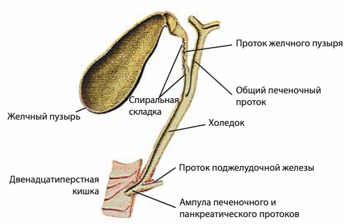
время поступления РФП в 12-пёрстную кишку;
время начала визуализации желчного пузыря;
время максимального накопления РФП в желчном пузыре;
двигательная функция желчного пузыря;
клиренс крови;
показатель концентрационной функции желчного пузыря (характеризует
концентрационную способность желчного пузыря и проходимость
желчного протока);
длительность латентного времени — время от начала стимуляции
желчеоттока до начала опорожнения желчного пузыря (отражает
скорость всасывания стимулирующих агентов в верхнем отделе
пищеварительного тракта и реакцию на них желчного пузыря);
период изгнания — продолжительность сокращения желчного
пузыря в ответ на стимуляцию;
фракция выброса желчного пузыря.
Программа радионуклидных исследований головного мозга. Математическая обработка